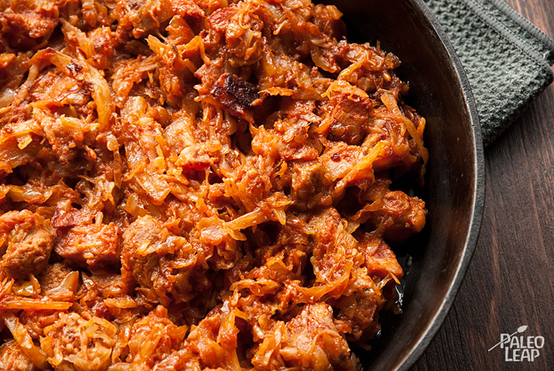

Bigos

Description
Bigos is a traditional Polish dish. It can be described as a one-pot hunter's stew.
There are as many variations of bigos as there are people cooking it, a common quality of all stews.
It does, however, possess a base list of ingredients that simply must be in it:
Those make up the backbone of any decent bigos.
Let's get to the full list of ingredients needed for my version of bigos
Ingredients:
- White cabbage (1 Head)
- Sour cabbage (500g)
- Smoked sausage (pack of 6)
- Pork shoulder fillets (400g)
- Brown onion (1 cannonball, or few smaller ones)
- Prunes (40g)
- Dried mushrooms (40g)
- Chopped tomatoes (3 cans)
- Splash of red wine
- Spices:
- Garlic powder
- Smoked paprika
- Salt and pepper
- Pack of bigos spice mix (optional)
Steps:
- Dice the onion
- Cut the sausage into slices
- Cut the pork shoulder fillets into bite-size chunks
- Put all 3 into a warmed up pot and start to fry them
- Add red wine and reduce it
- After the onion gets golden brown chop up the white cabbage and place in the pot
- Wait for it to wilt a bit
- Add the sour cabbage and spices
- After about 10 minutes, add the prunes and dried mushrooms
- While stirring, add chopped tomatoes
- Leave to boil on low heat for about 2 hours
- Serve and enjoy!